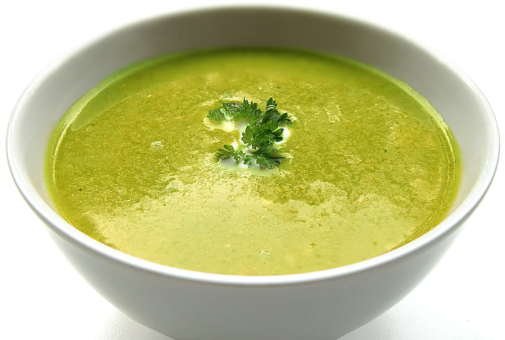

Cheesy Cream of Broccoli Soup
Home

Description
A smooth delightful soup, full of meaty mushrooms and rich in taste and nutrients, ideal for those of us who are more health conscious but don't want to give up the great taste of the occasional guilty pleasure.
Ingredients
- 1 (10 ounce) package frozen chopped broccoli
- 1 (10.75 ounce) can condensed cream of mushroom soup
- 1 and a quarter cups milk
- 8 ounces precessed cheese food (eg. Velveeta)
- salt and pepper to taste
Steps
- Prepare broccoli according to directions. Drain off excess water.
- Add cream of mushroom soup and milk to broccoli; stir and heat thoroughly on low.
- Add cheese, stirring until melted; season to taste with salt and pepper.